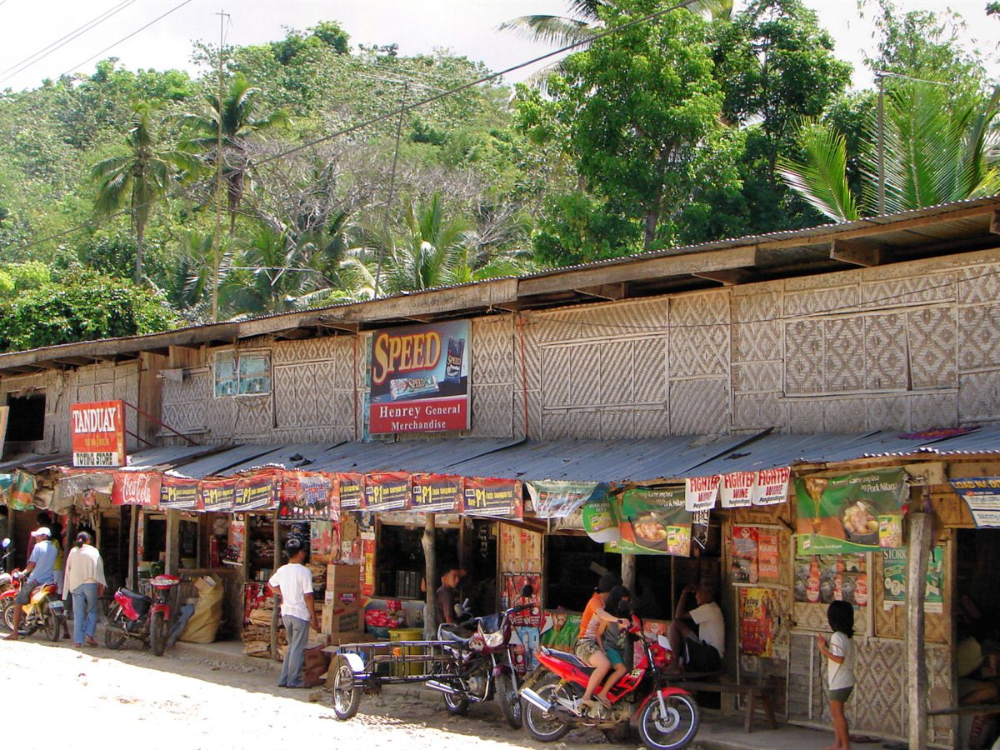

Tambayan
The store as the neighborhood’s news hub and meeting place.
People stay for a softdrink, a chat, or the latest news. The bench outside the store is where the community talks.
Ano’ng sasagutin ng kwentong ito
- Who hangs out at the store, and at what time of day?
- What news and chismis travel through the bench outside?
- How is the store different from a mall or a convenience store?
Tambayan means a place to hang out, and for many neighborhoods that place is the front of the sari-sari store: a bench, a few plastic chairs, a wall to lean on.
People come for a softdrink, a sachet of coffee or a small errand, and stay for much longer. The price of staying is small. Buying something is the ticket in, and the tindera rarely minds if you linger.
News moves through the bench without anyone planning it. Who is getting married, which street is flooded, who needs a tricycle driver, who just came home from abroad. It is a notice board, a radio and a bit of chismis all at once.
Compare this with a mall or an air-conditioned convenience store. Those places are designed for you to buy and go. The sari-sari store is open to the street, and the tindera sees everything from behind her counter. She knows when the kids come home from school and who walks by every morning. The store keeps watch over the block as much as it sells to it.
It also raises a question we want to ask on fieldwork: who is on the bench, and who is not? A tambayan belongs to the people who sit in it.

“Upo ka muna, makipagkwentuhan tayo.”
Pinagkunan
Sources for this story will be listed here.
Pahina 3 / 5